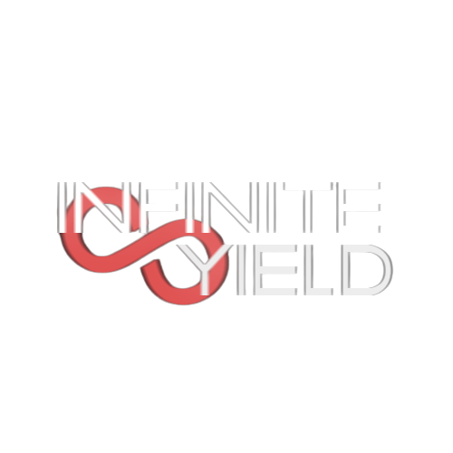

Available Scripts

INF YELD
loadstring(game:HttpGet('https://raw.githubusercontent.com/DarkNetworks/Infinite-Yield/main/latest.lua'))()
loadstring(game:HttpGet('https://raw.githubusercontent.com/DarkNetworks/Infinite-Yield/main/latest.lua'))()